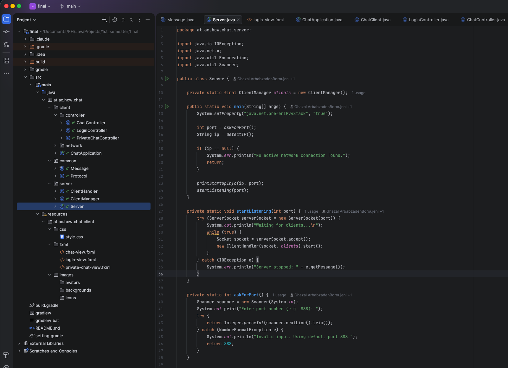

University project, Semester 1
Java Chatroom
A multi-user chat application built with Java sockets and threads.
- Type
- University project
- Semester
- 1
- Focus
- Network programming and OOP
- Status
- Completed
Overview
A client-server chat application from my first semester. It implements a multi-user chat system with Java socket programming and focuses on object-oriented design, concurrent communication and network programming basics.
How it works
The server listens on a port, and every client that connects gets its own ClientHandler thread. A ClientManager keeps track of all active connections and broadcasts each message to every other connected client. The client runs as a separate application with a chat window and a network package that handles the socket connection.
What I built
- A chat server that handles many clients at the same time
- Message broadcasting, so every connected user receives each message in real time
- A client application with an interface for sending and reading messages
- A clean split into server, client and common packages
Technical details
- ServerSocket and Socket: the server blocks on accept() and starts a new thread for each connection
- Multithreading: each ClientHandler runs on its own thread, so users never block each other
- ClientManager: holds the list of active handlers and loops over it to broadcast
- Gradle: build system for dependencies and running the application
What I learned
This was my first real experience with network programming and concurrency. The hardest part was thinking about what happens when several threads touch the same list of clients at once.
- How TCP connections work at the code level in Java
- Why thread safety matters in a system with shared state
- How to design a clean package structure for an application with several parts
- The difference between something that works and something that stays stable under concurrent load
Screens
